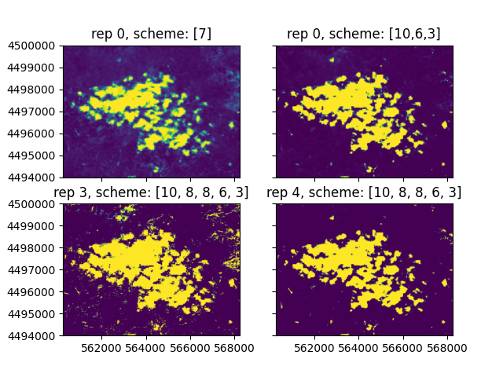
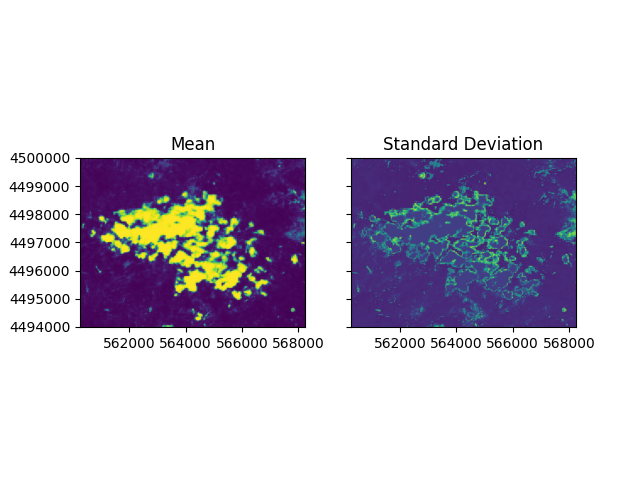
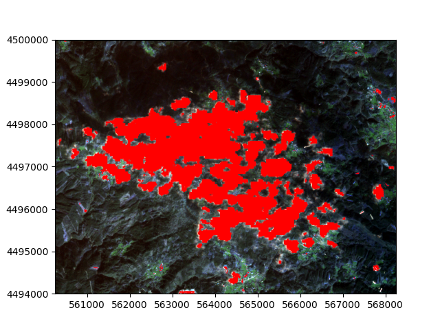

Advanced
In this advanced example, we interact with SpartANN in Python as a module. This approach provides more flexibility to adapt to different user cases and allows better configuration of the model definitions.
If SpartANN was installed via conda, the environment needs to be activated beforehand. Refer to the Installation section for further details.
To begin, we need to import the module into a Python session:
import spartann as sa
Read data
SpartANN provides functions to read tabular data in text format (e.g., CSV) and raster data, and it allows the intersection of both to extract and prepare training data.
The point location data is read as a DataTable:
pnt = sa.DataTable.from_file("examples/data/train_data.csv", sep=";")
print(pnt)
X|Y|Clouds
561109.6|4495044.6|0
565530.8|4496869.0|1
561844.0|4494916.3|0
562007.2|4499194.7|0
562642.6|4498192.1|1
566504.2|4496580.5|1
567055.0|4494047.8|0
564507.8|4497198.3|1
562593.0|4497836.6|1
...
The DataTable is very flexible. You can easily add or remove locations and classes for the training dataset. While this is outside the scope of this example, you can explore the methods available in the spartann.datatable package to understand its full functionality.
Reading raster data is just as straightforward:
rst = sa.Raster.from_file("examples/data/Sentinel2_clouds.tif")
rst.bandnames
['B4, central wavelength 665 nm', 'B3, central wavelength 560 nm', 'B2, central wavelength 490 nm', 'B8, central wavelength 842 nm', 'B5, central wavelength 705 nm', 'B6, central wavelength 740 nm', 'B7, central wavelength 783 nm', 'B8A, central wavelength 865 nm', 'B11, central wavelength 1610 nm', 'B12, central wavelength 2190 nm', 'B1, central wavelength 443 nm', 'B9, central wavelength 945 nm', 'B10, central wavelength 1375 nm']
The Raster object uses the osgeo/GDAL library to open the dataset. It provides an intuitive set of methods to work with rasters interacting with the library. One key advantage is its integration with the DataTable for data extraction.
We can extract data from the raster at coordinate locations. Note that there is no coordinate reference system check, so all data must share the same reference system. Otherwise, the DataTable will only return nodata values.
pnt.getDataFromRaster(rst)
print(pnt)
X|Y|Clouds|B4, central wavelength 665 nm|B3, central wavelength 560 nm|B2, central wavelength 490 nm|B8, central wavelength 842 nm|B5, central wavelength 705 nm|B6, central wavelength 740 nm|B7, central wavelength 783 nm|B8A, central wavelength 865 nm|B11, central wavelength 1610 nm|B12, central wavelength 2190 nm|B1, central wavelength 443 nm|B9, central wavelength 945 nm|B10, central wavelength 1375 nm
561109.6|4495044.6|0|1422.0|1629.0|1941.0|2147.0|1449.0|1875.0|2022.0|1962.0|1423.0|1190.0|2304.0|1354.0|1013.0
565530.8|4496869.0|1|3609.0|3367.0|3545.0|4493.0|4020.0|4612.0|4984.0|5245.0|4727.0|4670.0|3674.0|2256.0|1027.0
561844.0|4494916.3|0|1455.0|1669.0|1946.0|2632.0|1510.0|1991.0|2143.0|2305.0|1608.0|1294.0|2306.0|1417.0|1012.0
562007.2|4499194.7|0|1330.0|1527.0|1854.0|1519.0|1332.0|1494.0|1571.0|1580.0|1184.0|1079.0|2264.0|1211.0|1012.0
Now the points include the associated data with respective band names found in the raster.
For training the network, it is better to scale the data:
pnt.scaleData()
This centers and scales every variable in the DataTable for optimal training performance. The scale values used (means and standard deviations) are retained for transforming values during prediction.
The dataset is now ready for training.
Training the models
The first step in our process is to define a series of parameters for the modeling approach. These include the network architecture, learning parameters, and the strategy for producing multiple models.
In the example outlined in A First Model, we were limited to using only one architecture. Here, we have the flexibility to ensemble multiple network complexities. We will define three architectures with increasing levels of complexity. Simple networks tend to overgeneralize predictions, while complex networks often overfit the data. Ensembling these networks provides a balanced prediction by leveraging their different strengths.
We will use the following architectures:
Simple: This architecture consists of a single hidden layer with 7 neurons, represented as [7].
Medium: This replicates the architecture from the earlier example, with three layers consisting of 10, 6, and 3 neurons in each layer, represented as [10, 6, 3].
Complex: For this example, we use a more intricate architecture with five hidden layers, represented as [10, 8, 8, 6, 3]. While this architecture is likely overkill for the problem, it helps illustrate the range of complexity.
For each architecture, we will generate 5 repetitions, resulting in a total of 5 * 3 = 15 predictions per pixel. In each repetition, 20% of the data will be reserved for testing the network.
We will change the default learning optimizer from RMSProp (the only option in the previous example) to Adam. The Adam optimizer requires the definition of two momentum parameters. We will use a learning rate of 0.01. Since Adam is adaptive, the learning rate will vary throughout the iterative process. The two momentum parameters will be set to 0.9 and 0.999, as is typical for this optimizer.
rep = 5
test = 20
schemes = [[7], [10,6,3], [10, 8, 8, 6, 3]]
LRate=0.001
mom=[0.9, 0.999]
optim = "Adam"
We can proceed with the training stage by initializing a classifier and training the networks:
ann = sa.AnnClassifier.from_datatable(pnt,
repetitions=rep,
testpercent=test,
hl_schemes = schemes,
LR=LRate,
momentum=mom,
optim=optim)
ann.trainModel()
Training networks with scheme i:[13] | hl:[7] | o:[1].
Repetition: 1 from 5
| Iteration | Error | Train | Test | Product | ErrDiff |
| 1222 | 0.95860 | 0.917 | 0.625 | 0.573 | 0.00065 |
Best net:
Iteration 894
Error: 1.245
Validation train: 0.917
Validation test: 0.800
Validation product: 0.733
...
The iterative process displays the current repetition and network scheme. It also indicates the number of iterations required to minimize the best result, based on the optimal combination of train and test performance.
We can inspect the built models using the following code:
print(ann)
ANN supervised learning model
Model inputs provided:
- B4, central wavelength 665 nm - B3, central wavelength 560 nm - B2, central wavelength 490 nm - B8, central wavelength 842 nm - B5, central wavelength 705 nm - B6, central wavelength 740 nm - B7, central wavelength 783 nm - B8A, central wavelength 865 nm - B11, central wavelength 1610 nm - B12, central wavelength 2190 nm - B1, central wavelength 443 nm - B9, central wavelength 945 nm - B10, central wavelength 1375 nmModel outputs (targets):
- Clouds
Hidden layer schemes:
- i:[13] | hl:[7] | o:[1]
- i:[13] | hl:[10, 6, 3] | o:[1]
- i:[13] | hl:[10, 8, 8, 6, 3] | o:[1]
5 repetitions for each scheme.
Validation metric: Cohen's Kappa
Optimizer: Adam
15 networks trained.
Repetition 0 for scheme [13, 7, 1]:
Iteration 894
Error: 1.2452362697107282
Validation train: 0.9168110918544194
Validation test: 0.8
Validation product: 0.7334488734835356
Repetition 1 for scheme [13, 7, 1]:
Iteration 1
Error: 5.17178503715067
Validation train: 0.625
Validation test: 0.6363636363636364
Validation product: 0.3977272727272727
Repetition 2 for scheme [13, 7, 1]:
Iteration 934
Error: 2.0674301906878685
Validation train: 0.7083333333333334
Validation test: 1.0
Validation product: 0.7083333333333334
Repetition 3 for scheme [13, 7, 1]:
Iteration 942
Error: 1.892011726059445
Validation train: 0.8754325259515571
Validation test: 1.0
Validation product: 0.8754325259515571
Repetition 4 for scheme [13, 7, 1]:
Iteration 1058
Error: 1.426562109206801
Validation train: 0.8754325259515571
Validation test: 0.625
Validation product: 0.5471453287197232
Repetition 0 for scheme [13, 10, 6, 3, 1]:
Iteration 1375
Error: 0.7872104782338998
Validation train: 0.9581881533101045
Validation test: 0.8333333333333334
Validation product: 0.7984901277584204
Repetition 1 for scheme [13, 10, 6, 3, 1]:
Iteration 46
Error: 5.616584455382552
Validation train: 0.5782073813708261
Validation test: 0.5263157894736842
Validation product: 0.3043196744056979
Repetition 2 for scheme [13, 10, 6, 3, 1]:
Iteration 906
Error: 1.385236167524681
Validation train: 0.9168110918544194
Validation test: 1.0
Validation product: 0.9168110918544194
Repetition 3 for scheme [13, 10, 6, 3, 1]:
Iteration 897
Error: 1.297855575495178
Validation train: 0.9154929577464789
Validation test: 0.8333333333333334
Validation product: 0.7629107981220657
Repetition 4 for scheme [13, 10, 6, 3, 1]:
Iteration 496
Error: 2.1708587197763625
Validation train: 0.7894736842105263
Validation test: 0.35135135135135137
Validation product: 0.2773826458036985
Repetition 0 for scheme [13, 10, 8, 8, 6, 3, 1]:
Iteration 674
Error: 1.4595032219556312
Validation train: 0.9166666666666666
Validation test: 0.8
Validation product: 0.7333333333333334
Repetition 1 for scheme [13, 10, 8, 8, 6, 3, 1]:
Iteration 255
Error: 3.746965319310201
Validation train: 0.7083333333333334
Validation test: 0.8333333333333334
Validation product: 0.5902777777777778
Repetition 2 for scheme [13, 10, 8, 8, 6, 3, 1]:
Iteration 1581
Error: 1.2031963969473864
Validation train: 0.9154929577464789
Validation test: 0.6571428571428571
Validation product: 0.6016096579476861
Repetition 3 for scheme [13, 10, 8, 8, 6, 3, 1]:
Iteration 1142
Error: 2.119890823580577
Validation train: 0.7916666666666666
Validation test: 0.6666666666666666
Validation product: 0.5277777777777777
Repetition 4 for scheme [13, 10, 8, 8, 6, 3, 1]:
Iteration 714
Error: 1.8369806752842848
Validation train: 0.8741258741258742
Validation test: 0.6666666666666666
Validation product: 0.5827505827505828
We can write the models to a file so we can retrieve it later for predictions in same or different images (with the same bands).
ann.writeModel("Clouds_model.obj")
Predicting with model
If you kept the session open, you will need to generate an AnnPredict object from the classifier. Since the raster to predict is the same, it does not need to be reopened.
If you restarted the Python session, you can retrieve the saved models and the raster. To do so, start a new Python session, import the required modules, and load the models and raster.
import spartann as sa
ap = sa.AnnPredict.from_modelsfile("Clouds_model.obj")
rst = sa.Raster.from_file("examples/data/Sentinel2_clouds.tif")
With SpartANN, you can predict using a list of values, a DataTable, or a raster. Since predicting with a raster is the most common use case, the following example demonstrates this:
pred = ap.predictFromRaster(rst)
The prediction process might take some time, as it computes values for all pixels. Once the prediction is complete, you can save the raster to a TIFF file for inspection in any GIS software.
pred.writeRaster("Results.tif")
The band names in the output raster are descriptive, indicating which repetition and scheme were used for each prediction.
for i, bname in enumerate(pred.bandnames):
print("band", i+1, ":", bname)
band 1 : Prediction for Clouds, with scheme [13, 7, 1], repetition 0
band 2 : Prediction for Clouds, with scheme [13, 7, 1], repetition 1
band 3 : Prediction for Clouds, with scheme [13, 7, 1], repetition 2
band 4 : Prediction for Clouds, with scheme [13, 7, 1], repetition 3
band 5 : Prediction for Clouds, with scheme [13, 7, 1], repetition 4
band 6 : Prediction for Clouds, with scheme [13, 10, 6, 3, 1], repetition 0
band 7 : Prediction for Clouds, with scheme [13, 10, 6, 3, 1], repetition 1
band 8 : Prediction for Clouds, with scheme [13, 10, 6, 3, 1], repetition 2
band 9 : Prediction for Clouds, with scheme [13, 10, 6, 3, 1], repetition 3
band 10 : Prediction for Clouds, with scheme [13, 10, 6, 3, 1], repetition 4
band 11 : Prediction for Clouds, with scheme [13, 10, 8, 8, 6, 3, 1], repetition 0
band 12 : Prediction for Clouds, with scheme [13, 10, 8, 8, 6, 3, 1], repetition 1
band 13 : Prediction for Clouds, with scheme [13, 10, 8, 8, 6, 3, 1], repetition 2
band 14 : Prediction for Clouds, with scheme [13, 10, 8, 8, 6, 3, 1], repetition 3
band 15 : Prediction for Clouds, with scheme [13, 10, 8, 8, 6, 3, 1], repetition 4
Results
SpartANN does not provide built-in plotting capabilities for the results, but it can easily interact with external libraries such as matplotlib (not a listed requirement) for visualization. Alternatively, you can use any GIS software or other programming environments, such as R, for further analysis and visualization.
Below, we showcase the results produced without including the code.
The predictions show slight differences in their ability to detect clouds, but the core output remains consistent regardless of the repetition or network scheme.
By calculating the mean and standard deviation, we can gain a clearer understanding of the core predictions and the associated uncertainty:
When superimposed onto the original raster, the success of the cloud detection process becomes evident:
